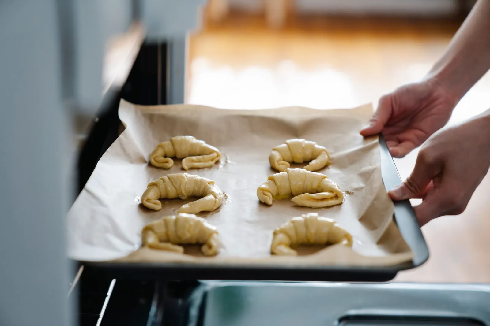
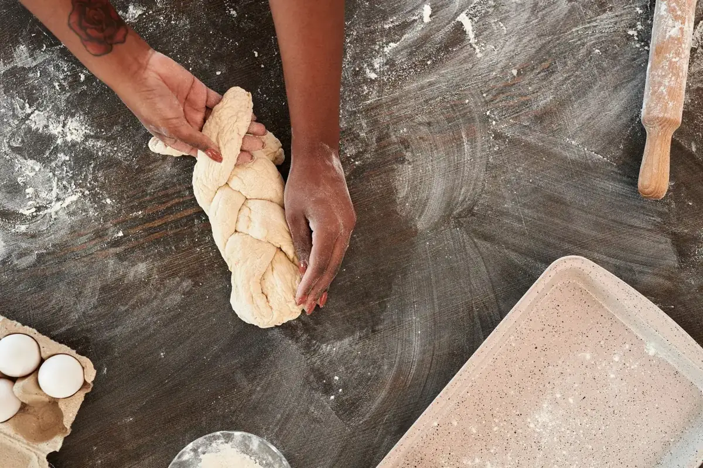
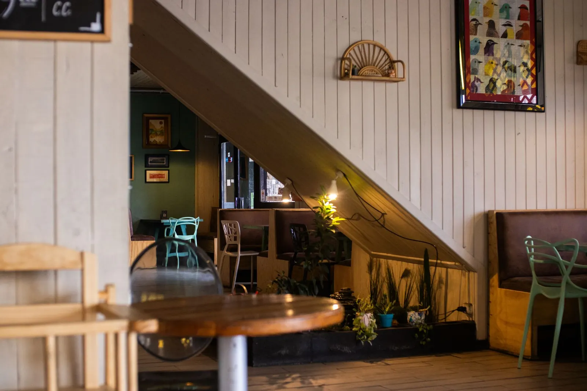

Start / Über uns
Über uns
Aus Liebe zum Handwerk
Was 1998 als kleine Quartierbäckerei begann, ist heute ein Treffpunkt für ganz Demostadt – mit Backstube, Café und viel Herz.
Unsere Geschichte
Mehl, Wasser, Salz – und Zeit
Wir glauben, dass gutes Brot keine Abkürzungen kennt. Darum lassen wir unsere Teige ruhen, oft über Nacht, manchmal zwei Tage lang.
Im Jahr 2006 haben wir die alte Weinstube nebenan übernommen und daraus unser Café gemacht. Seither duftet es in der Backstubengasse nicht nur nach frischem Brot, sondern auch nach Kaffee. Heute arbeiten 18 Menschen bei uns – Bäckerinnen, Konditoren, Baristas und Gastgeber.


Meilensteine
Unser Weg
- 1998
Die erste Backstube
Bäckermeister Lukas Brunner eröffnet eine kleine Quartierbäckerei mit einem Holzofen und drei Brotsorten.
- 2006
Das Café öffnet
Aus der ehemaligen Weinstube nebenan wird unser Café – mit Platz für 48 Gäste und einer Terrasse im Innenhof.
- 2014
Unsere Hausmischung
Zusammen mit einer kleinen Rösterei aus der Region entsteht die Kaffeemischung «Altstadt».
- 2021
Neue Konditorei
Die Backstube wird umgebaut. Seither fertigen wir auch Hochzeits- und Festtagstorten auf Bestellung.
- Heute
Ein Ort für alle
Frühstück, Mittagsmenü, Apéro und frisches Brot – sieben Tage die Woche.
Wofür wir stehen
Unsere Werte
Handwerk
Wir formen, flechten und dekorieren von Hand – jeden Tag.
Regionalität
Mehl aus der Mühle im Nachbardorf, Milch und Butter von Höfen in der Umgebung.
Geduld
Lange Teigführung für mehr Aroma und bessere Bekömmlichkeit.
Gastfreundschaft
Bei uns ist jeder Gast willkommen – ob für fünf Minuten oder fünf Stunden.
Team
Die Menschen hinter Democafé
Fiktive Personen für diese Demo-Website.
Lukas Brunner
Bäckermeister & GründerSteht seit über 25 Jahren um vier Uhr morgens am Ofen.
Sophie Meier
Barista & GastgeberinVerantwortlich für Kaffee, Latte-Art und gute Laune im Café.
Marco Keller
KonditorGestaltet Torten für Geburtstage, Hochzeiten und Firmenanlässe.
«Ein gutes Brot braucht vor allem eines: Zeit. Und die schenken wir auch unseren Gästen.»Lukas Brunner, Bäckermeister